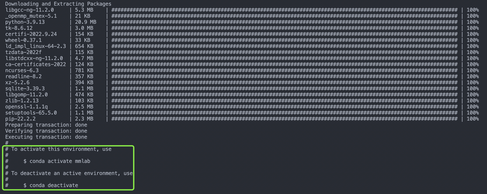
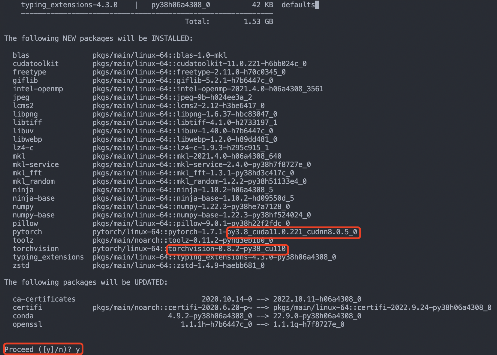
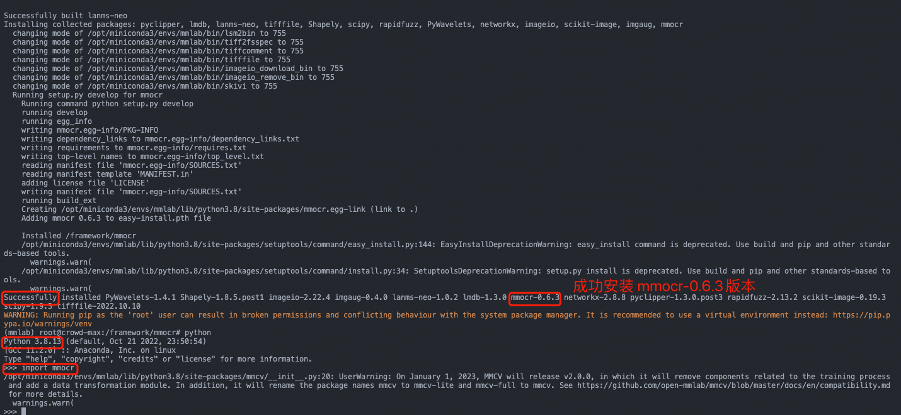

- 一，更新 pip 和 conda 下载源
- 二，MMDetection 简介
- 三，MMDetection 安装
- 参考资料
一，更新 pip 和 conda 下载源
默认情况下 pip 使用的是国外的镜像，在下载的时候速度非常慢，下面我将介绍如何更新下载源为国内的清华镜像源，其地址为：https://pypi.tuna.tsinghua.edu.cn/simple，阿里云镜像的更新方法一样。
1.1，查看 conda 和 pip 版本
root# conda --version
conda 22.9.0
root# pip --version
pip 20.2.4 from /opt/miniconda3/lib/python3.8/site-packages/pip (python 3.8)
如果 pip 版本 <10.0.0，建议升级 pip 到最新的版本 (>=10.0.0) 以方便后面的更新下载源配置：
# 更新 pip 版本命令
python -m pip install --upgrade pip
1.2，更新 pip 下载源
在下载安装好 python3+pip 或 anconda3 的基础上，建议更新为清华/阿里镜像源（默认的 pip 和 conda下载源速度很慢）。
1，Linux/Mac 系统，pip 全局更新下载源为清华源和和查看下载源地址的命令如下:
# 更新 pip 下载源为清华镜像
pip config set global.index-url https://pypi.tuna.tsinghua.edu.cn/simple
# 查看下载源地址
pip3 config list

2，Windows 系统，需要当前在当前用户目录下手动创建配置文件然后修改。
- 资源管理器的地址栏输入
%appdata%后回车，切换到用户路径下的appdata目录； - 进入到
pip文件夹中（没有则手动创建），并创建文件pip.ini，此文件的完整路径为%APPDATA%/pip/pip.ini； - 在
pip.ini文件中添加以下内容后，再次使用pip，即会使用新下载源。
[global]
timeout = 8000
index-url = https://pypi.tuna.tsinghua.edu.cn/simple
trusted-host = pypi.tuna.tsinghua.edu.cn/simple
Linux/Mac 也可通过直接修改配置文件（可能需要 root 权限）的方式直接更新下载源，vim ~/.pip/pip.conf，修改如下:
global.index-url='https://pypi.tuna.tsinghua.edu.cn/simple'
1.3，更新 conda 下载源
1，conda 更新源的方法：
各系统都可以通过修改用户目录下的 .condarc 文件。Windows 用户无法直接创建名为 .condarc 的文件，可先执行 conda config --set show_channel_urls yes 生成该文件。Linux/Mac 系统一般自带 .condarc 文件，文件地址为 ~/.condarc。
2，之后再修改.condarc 文件内容如下:
channels:
- defaults
show_channel_urls: true
default_channels:
- https://mirrors.tuna.tsinghua.edu.cn/anaconda/pkgs/main
- https://mirrors.tuna.tsinghua.edu.cn/anaconda/pkgs/r
- https://mirrors.tuna.tsinghua.edu.cn/anaconda/pkgs/msys2
custom_channels:
conda-forge: https://mirrors.tuna.tsinghua.edu.cn/anaconda/cloud
msys2: https://mirrors.tuna.tsinghua.edu.cn/anaconda/cloud
bioconda: https://mirrors.tuna.tsinghua.edu.cn/anaconda/cloud
menpo: https://mirrors.tuna.tsinghua.edu.cn/anaconda/cloud
pytorch: https://mirrors.tuna.tsinghua.edu.cn/anaconda/cloud
pytorch-lts: https://mirrors.tuna.tsinghua.edu.cn/anaconda/cloud
simpleitk: https://mirrors.tuna.tsinghua.edu.cn/anaconda/cloud
二，MMDetection 简介
MMDetection 是一个基于 PyTorch 的目标检测开源工具箱。它是 OpenMMLab 项目的一部分。主分支代码目前支持 PyTorch 1.5 以上的版本。主要特性为：
- 模块化设计
- 丰富的即插即用的算法和模型
- 速度快
- 性能高
更多详情请参考 MMDetection 仓库 README。
三，MMDetection 安装
3.1，依赖环境
- 系统：首选 Linux，其次
macOS和Windows（理论上支持，实际安装需要踩很多坑） Python 3.6+- 首选 CUDA 11.3+、其次推荐 CUDA 9.2+
- 首选 Pytorch 1.9+，其次推荐 PyTorch 1.3+
GCC 5+- MMCV
3.2，安装过程记录
1，安装操作系统+cuda
我是在 docker 容器中安装和进行深度学习算法开发的，其操作系统、cuda、gcc 环境如下：

2，安装 Anconda3
官网下载 Anconda3 linux 安装脚本，并安装 Anconda3（很好装一路 yes 即可），并使用 conda 新建虚拟环境，并激活虚拟环境进入。
conda create -n mmlab python=3.8 -y # 创建 mmlab 的虚拟环境，其中python解释器版本为3.8(python3.9版本不行, 没有pytorch_cuda11.0版本)
conda activate mmlab # 激活虚拟环境进入
虚拟环境安装成功后的部分过程截图如下所示：

如果你激活虚拟环境出现如下所示错误。
CommandNotFoundError: Your shell has not been properly configured to use 'conda activate'.
To initialize your shell, run
$ conda init <SHELL_NAME>
Currently supported shells are:
- bash
- fish
- tcsh
- xonsh
- zsh
- powershell
See 'conda init --help' for more information and options.
IMPORTANT: You may need to close and restart your shell after running 'conda init'.
可通过以下命令重新激活 conda 环境，即可解决问题，方法参考自 stack overflow 问题。
source ~/anaconda3/etc/profile.d/conda.sh # anaconda3 的安装路径有可能不一样，自行修改
conda activate mmlab
3，安装 pytorch-gpu
首选安装 pytorch-gpu 版本，使用在线安装命令:
conda install pytorch=1.7.1 cudatoolkit=11.0 torchvision=0.8.2 -c pytorch
官网命令的 cuda11.0 的 torchaudio==0.7.2 版本不存在，故去除。
安装过程信息（记得检查 pytorch 版本是 cuda11.0 的）截图如下：

安装成功后，进入 python 解释器环境，运行以下命令，判断 pytorch-gpu 版本是否安装成功。
>>> import torch
>>> torch.cuda.is_available()
True
>>> torch.cuda.device_count()
2
>>>
同时可通过以下命令查看 CUDA 和 PyTorch 的版本
python -c 'import torch;print(torch.__version__);print(torch.version.cuda)'
总的来说，pytorch 等各种 python 包有离线和在线两种方式安装：
- 在线：
conda/pip方法安装，详细命令参考 pytorch 官网，但是这种方式实际测试下来可能会有问题，需要自己肉眼检查安装的版本是否匹配。 - 离线：浏览器下载安装包，然后通过
pip或者conda方式离线安装。
不通过浏览器下载
whl包，而是pip install https://download.pytorch.org/whl/cu110/torch-1.7.1%2Bcu110-cp39-cp39-linux_x86_64.whl方式可能会有很多问题，比如网络问题可能会导致安装失败。 WARNING: Retrying (Retry(total=4, connect=None, read=None, redirect=None, status=None)) after connection broken by 'NewConnectionError(': Failed to establish a new connection: Errno 101 Network is unreachable')': /whl/cu110/torch-1.7.1%2Bcu110-cp39-cp39-linux_x86_64.whl 或者下载到一半的网络连接时常超过限制。 pip._vendor.urllib3.exceptions.ReadTimeoutError: HTTPSConnectionPool(host='download.pytorch.org', port=443): Read timed out.
4，安装 mmdetection
不建议安装 cpu 版本，因为很多算子不可用，其次截止到2022-11-3日，macos 系统 cpu 环境的
mmdet.apis是不可用的。
建议使用 MIM 来自动安装 MMDetection 及其相关依赖包-mmcv-full 。
pip install openmim # 或者 pip install -U openmim
mim install mmdet

5，安装 MMOCR
MMOCR 依赖 PyTorch, MMCV 和 MMDetection。这些依赖环境，我们在前面的步骤中已经安装好了，所以可通过下面命令直接安装 MMOCR。
情况 1: 若你需要直接运行 MMOCR 或在其基础上进行开发，则通过源码安装：
git clone https://github.com/open-mmlab/mmocr.git
cd mmocr
pip3 install -v -e .
# "-v" 会让安装过程产生更详细的输出
# "-e" 会以可编辑的方式安装该代码库，你对该代码库所作的任何更改都会立即生效
情况 2：如果你将 MMOCR 作为一个外置依赖库使用，通过 pip 安装即可：
pip install mmocr

参考资料
mmdetection和pytorch官网- https://download.pytorch.org/whl/torch\_stable.html